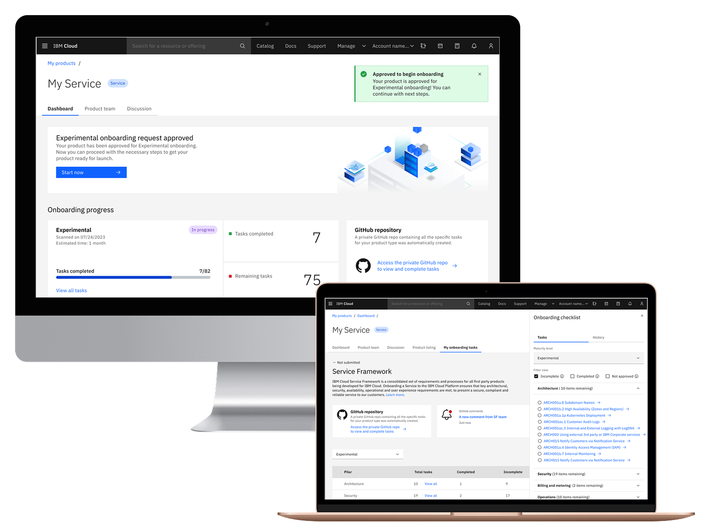
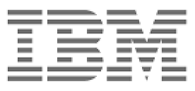
IBM's current tool for onboarding and managing services on the IBM Cloud Marketplace, Resource Management Console (RMC), has become a critical bottleneck for service teams launching products on IBM Cloud.
While RMC handled essential functions such as catalog listings, pricing configuration, and approval tracking, its outdated infrastructure couldn't support modern enhancements, violates compliance standards, and has high costs per month to be maintained.
Problem
IBM maintained two separate onboarding tools: RMC for first-party services (legacy, $45K/month) and Partner Center for third-party products. RMC violated compliance standards and couldn't support modern enhancements.
Teams struggled with fragmented tools and unclear processes, forcing SMEs to provide repetitive guidance—delaying launches and causing compliance gaps.
Solution
Redesigned Partner Center to unify first-party and third-party onboarding. Consolidated fragmented workflows into guided wizards, centralized dashboards, dynamic checklists, and transparent approval flows.
Reduced onboarding time from 9-12 months to 1-3 months (~80% faster) and delivered $540K in annual savings with zero service disruption.
⚠️ Confidentiality Notice: This case study has been modified to protect proprietary information. Specific metrics have been approximated and sensitive screenshots redacted in accordance with IBM NDA requirements.
My Role
- Lead Product Designer
Duration & Team
- 2 years
- Product Manager
- Researcher
- Developers
- Architect
Tools
- Figma
- Mural
- Slack
My role
As the Lead Product Designer over two years, I led the migration of RMC capabilities to Partner Center, working closely with a product manager, researcher, developers, and an architect.
The core design challenge was transforming what started as a simple technical migration into a complete reimagine of the onboarding experience—moving from a broken ecosystem of fragmented tools, unclear processes, and scattered workflows to a unified, intuitive platform.
Impact & Results
Business value
- $540K annual savings from retiring RMC infrastructure
- Improved compliance—Partner Center meets current requirements
- Single platform for first-party and third-party onboarding
User efficiency
- Onboarding: 9-12 months → 1-3 months (~80% faster)
- 60% fewer 60% reduction in SME support requests — teams can self-serve through guided workflows
- Instant executive reporting—dashboard replaces manual prep
User satisfaction
- 100% task completion in usability testing (8 participants)
- Service Framework perceived as "less intimidating"
- "Huge impact on reducing time spent reporting" — Release Manager
01
Research & Discovery
Research Process
Methods
- User interviews with 50 participants
- Collaborative workshops
- Usability testing sessions
Participants
- Service Provider teams (product developers, architects, PMs)
- Pillar Focals and Subject Matter Experts (reviewers/approvers)
- Service Framework program managers
Goal
Map the end-to-end onboarding journey to identify systemic pain points beyond RMC's technical limitations.
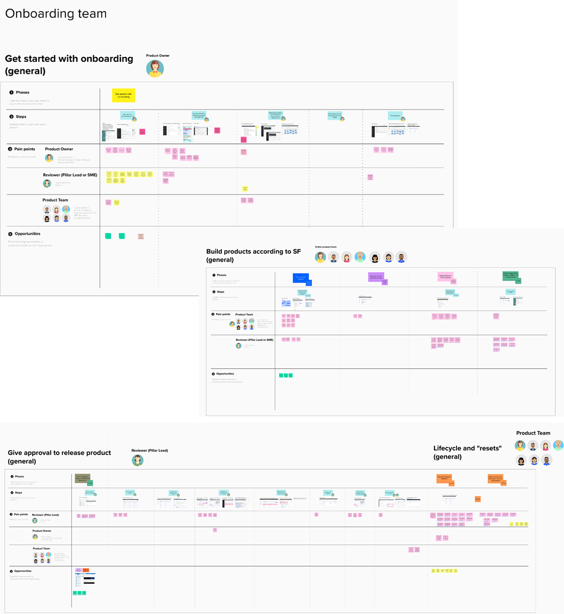
Personas
Based on research with 50 participants, I created two personas representing our primary users: Product Managers launching services and Security Directors reviewing compliance.
Lisa M
Product Manager
"I don't know how long it takes to complete the process, and what does it take. Navigating service framework is hard for entire team and I don't read it because I'm over assigned."
Role
- Product managers, product developers, and architects launching services on IBM Cloud
Goals
- Understand which requirements apply to their specific product
- Complete onboarding efficiently to meet release deadlines
- Track progress clearly throughout the lifecycle
Frustrations
- Overwhelmed by extensive documentation without clear guidance
- Can't gauge effort, timelines, or see value in requirements
- Must juggle multiple tools with no centralized tracking
John J
Security Program Director
"Teams are often so overwhelmed by the amount of information. This leads teams to immediately schedule one-on-one meetings with requirement focals to ask them what to do."
Role
- Pillar Focals & SMEs: Reviewers and approvers who verify compliance and provide guidance
Goals
- Verify teams have completed requirements with proper evidence
- Maintain security and compliance standards across the portfolio
- Report progress to executive leadership
Frustrations
- Overwhelmed answering repetitive questions from dozens of teams
- Can't easily find evidence scattered across multiple GitHub repos
- No centralized way to track lifecycle requirements or hold teams accountable
Key Research Findings
Process Understanding Crisis
Teams struggle with extensive, outdated documentation lacking clear journey visibility.
Evidence:
- Teams skip requirements due to overwhelming volume
- SMEs overwhelmed with manual kick-off meetings
- No way to measure velocity or set timeline expectations
Impact: Teams bypass requirements or delay releases, creating security risks.
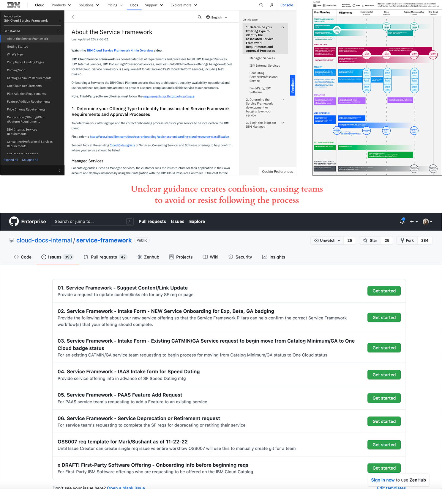
Evidence Documentation Fragmentation
Requirements and evidence scattered across individual GitHub repos make verification nearly impossible.
Evidence:
- Each team uses separate repos with the Issue Creator tool
- Non-developers miss requirements in GitHub
- Reviewers must check multiple repos with no centralized view
- Evidence lost when team members leave IBM
Impact: Products reach customers without proper quality assurance.
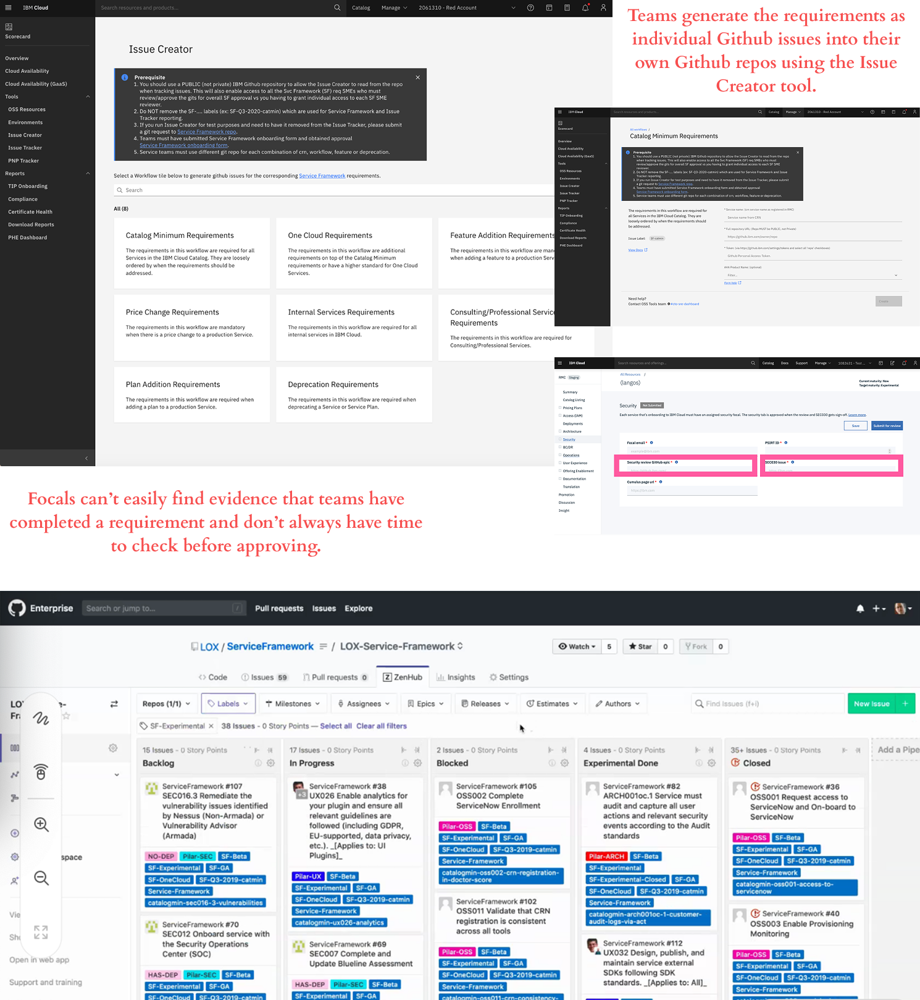
Communication & Accountability Breakdown
No centralized system to communicate updates, track requirements, or maintain accountability.
Evidence:
- Updates scattered across Slack, meetings, and spreadsheets
- Teams miss announcements about new requirements
- No accurate tracking for executive reporting
Impact: Slow adoption of critical requirements and missed annual reviews.
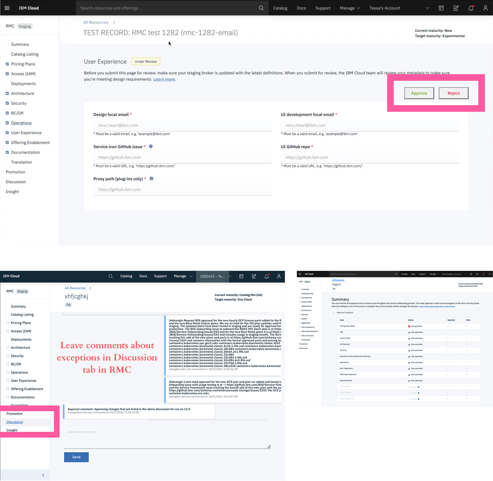
Resource Management Console (RMC)
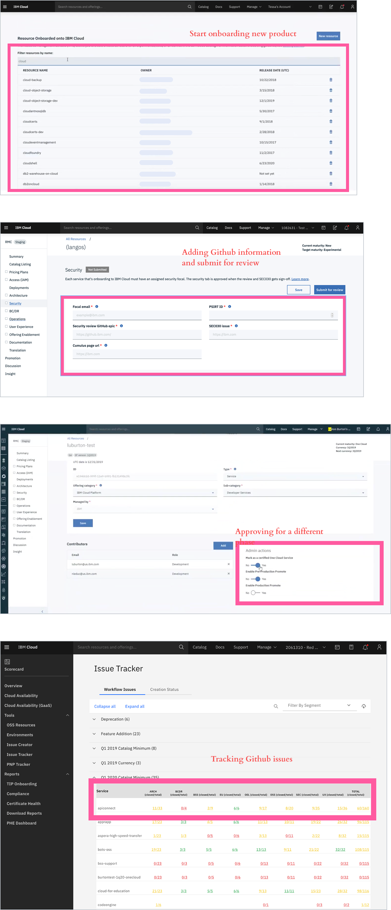
Partner Center (Original)
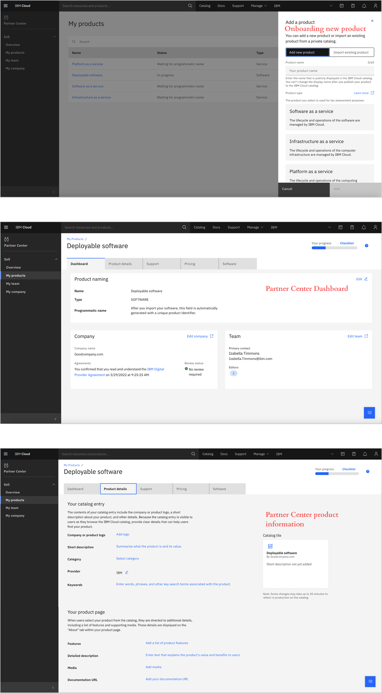
Brainstorm Workshop
How might we...
...enable product teams to quickly understand the overall process and which requirements are relevant to them without relying on Pillar Focals and SMEs?
How might we...
...enable product teams to securely document evidence for requirements or share information with Pillar Focals or SMEs that is easy to locate?
How might we...
...help product teams become more aware of and accountable for lifecycle requirements and reviews so that they are easier to prioritize and faster to complete?
How might we...
...enable SF program managers or Pillar focals to more accurately report the status of products to gain Executive leadership support on achieving and maintaining consistent customer outcomes across the entire IBM Cloud portfolio?
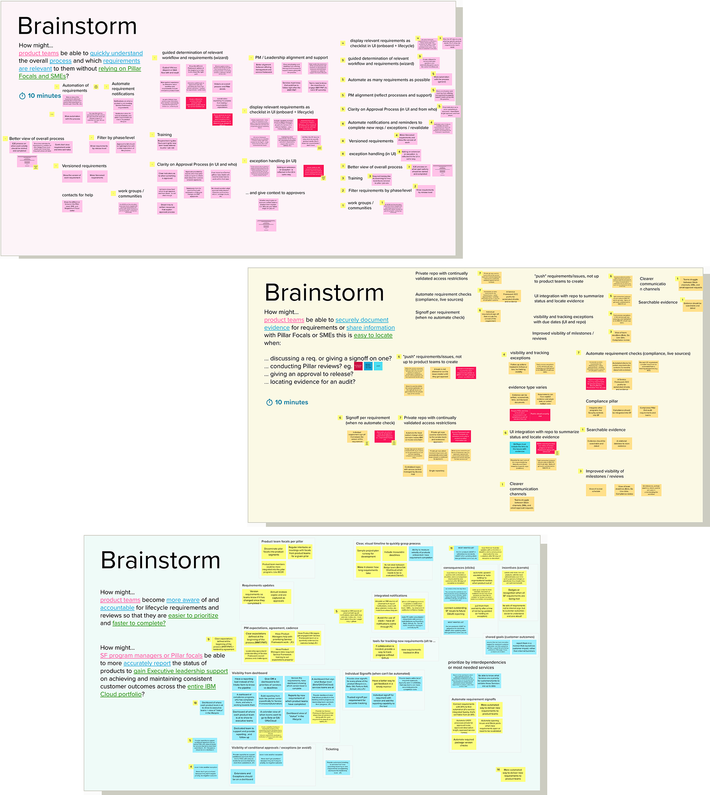
Feature Prioritization
Big Bets
- Centralized Progress Dashboard: Visual dashboard showing each product's onboarding status, shareable with executives and providing clear lifecycle milestone visibility
- Intelligent Requirements Checklist: Dynamic checklist that automatically displays relevant requirements based on product type, connected to documentation and GitHub issues
- Automated Requirement Notifications: Automatic notifications when new requirements are published, keeping teams informed without relying on Slack or email
- Approval Transparency: Clear indicators showing approval status, required approvers, and instructions for obtaining sign-offs
- Secure Private Repositories: Restricted GitHub repos accessible only to service teams and designated reviewers, with validated access controls
No Brainers
- Guided Workflow Wizard: Automated wizard that determines the correct workflow based on service details, then creates and pushes relevant requirements directly to the team's private repository
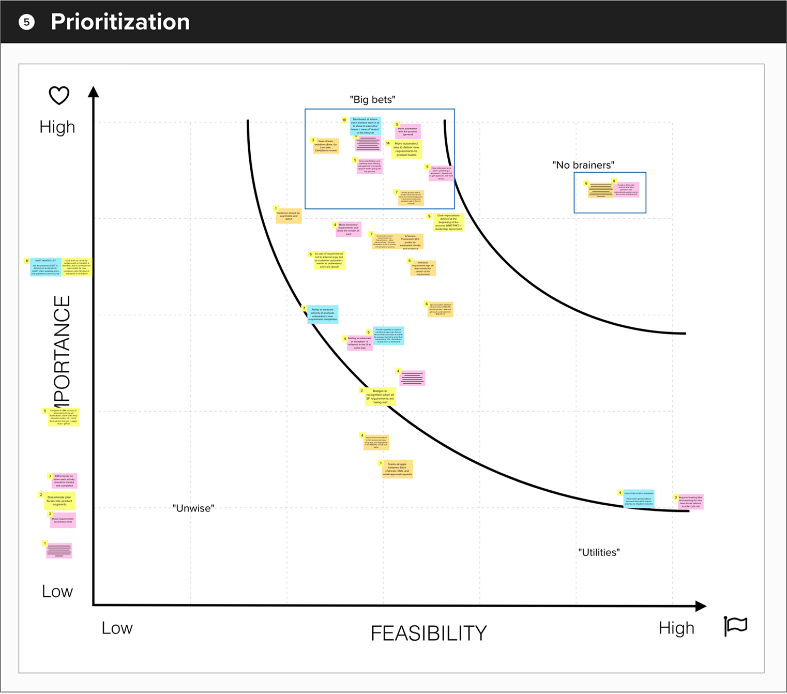
User Journey Map
Feature gap analysis
As next step, we mapped RMC's functionality against Partner Center to identify what needed to be built and where we could improve. Partner Center already had the third-party seller features covered most basic approval workflows, but critical gaps remained for first-party service onboarding.
Missing capabilities:
- Maturity level tracking (Experimental/Beta/GA/OneCloud)
- Evidence submission for approvals
- Approval history and compliance tracking
- Conditional approvals with exceptions
Opportunities to Improve:
- Automate readiness checks
- Integrate issue tracking (eliminate GitHub fragmentation)
- Unify scattered review processes
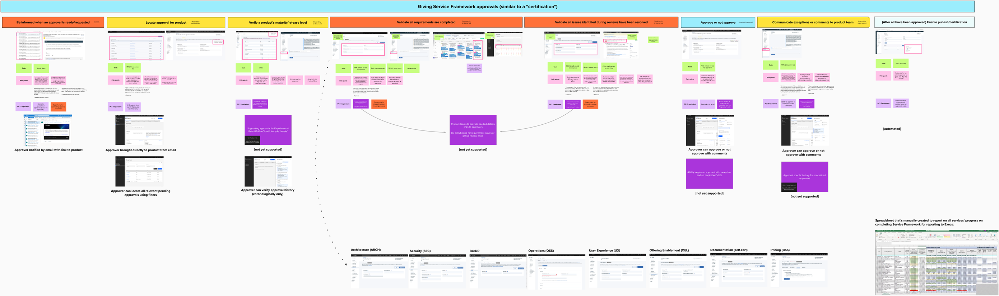
02
Design Solution
Low-Fidelity Designs
We started with low-fidelity wireframes to rapidly explore solutions for the core problems identified in research. The wireframes focused on three critical areas: how teams would discover and understand their requirements, how they would track progress across the onboarding journey, and how reviewers would validate completion and provide approvals.
Key Explorations:
- Wizard Flow: Mapped out question sequences and decision trees to determine the optimal number of steps needed to collect service details without overwhelming users
- Dashboard Layouts: Tested ways to display product status, from detailed tables to card-based views, exploring how to balance comprehensive information with at-a-glance clarity
- Checklist Organization: Experimented with grouping requirements by phase, priority, or pillar to find the most intuitive structure for teams completing tasks
- Approval Workflows: Explored different visual representations of the approval pipeline to make status and next steps immediately clear
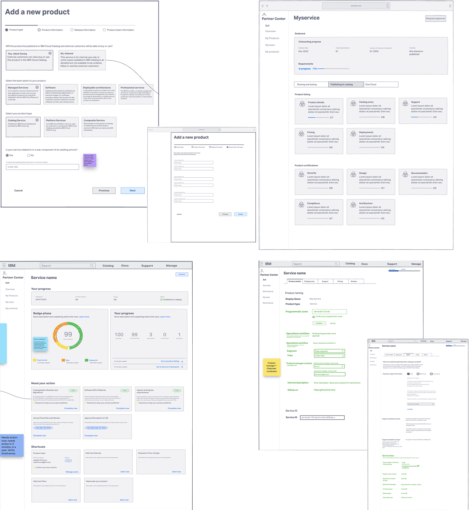
High-Fidelity Designs
The high-fidelity designs consolidated fragmented workflows into four core components:
- Guided wizard that automatically determines relevant requirements
- Centralized dashboard for progress tracking and product lifecycle updates
- Checklist connected to documentation
- Transparent approval workflow
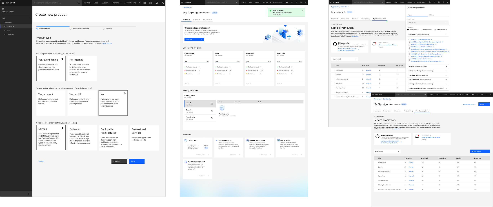
Wizard
Design Decisions:
- Automated workflow selection — Wizard identifies product type and requirements automatically
- Self-service guidance — Built-in process knowledge eliminates SME dependency
- Smart filtering — Only generates relevant requirements for specific service type
Impact:
- 60% fewer SME support requests—teams can self-serve
- Weeks → minutes for onboarding setup via guided questions
- Eliminated workflow confusion and requirement errors
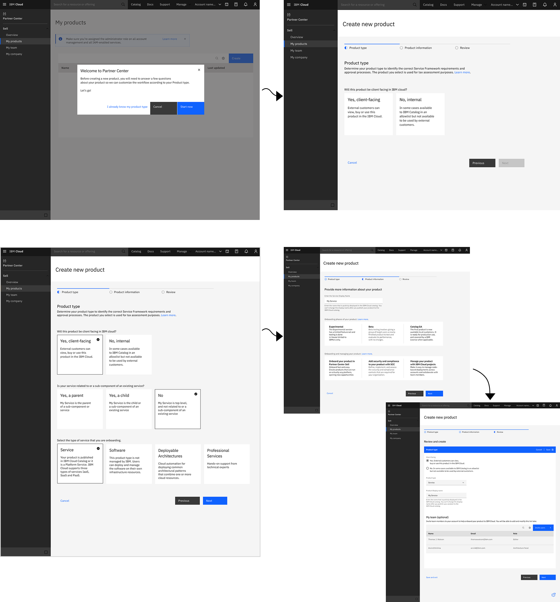
Dashboard
Design Decisions:
- Unified visibility — Maturity levels, progress, and status in one view
- Real-time tracking — Portfolio-wide progress for executive reporting
- Automated alerts — Teams notified of new/updated requirements
Impact:
- Eliminated hours of manual stakeholder reporting
- Zero missed annual reviews or critical deadlines
- Increased team ownership—fewer manual follow-ups needed
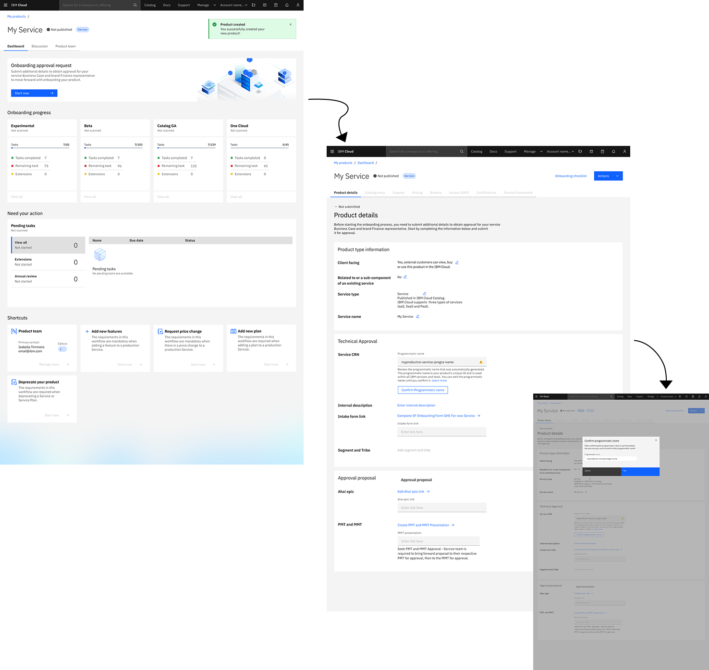
Checklist and Approval Flow
Design Decisions:
- Dynamic checklist — Displays only relevant requirements by product type and phase (Experimental/Beta/GA/OneCloud)
- GitHub integration — Auto-pushes to private repos, syncs completion status
- Centralized evidence — All proof stored in one accessible location. Private repositories restricted to service teams and designated reviewers with validated permissions
Impact:
- Instant verification—no more hunting across scattered repos
- Phase-based progression prevents incomplete submissions
- Evidence preserved when team members leave IBM
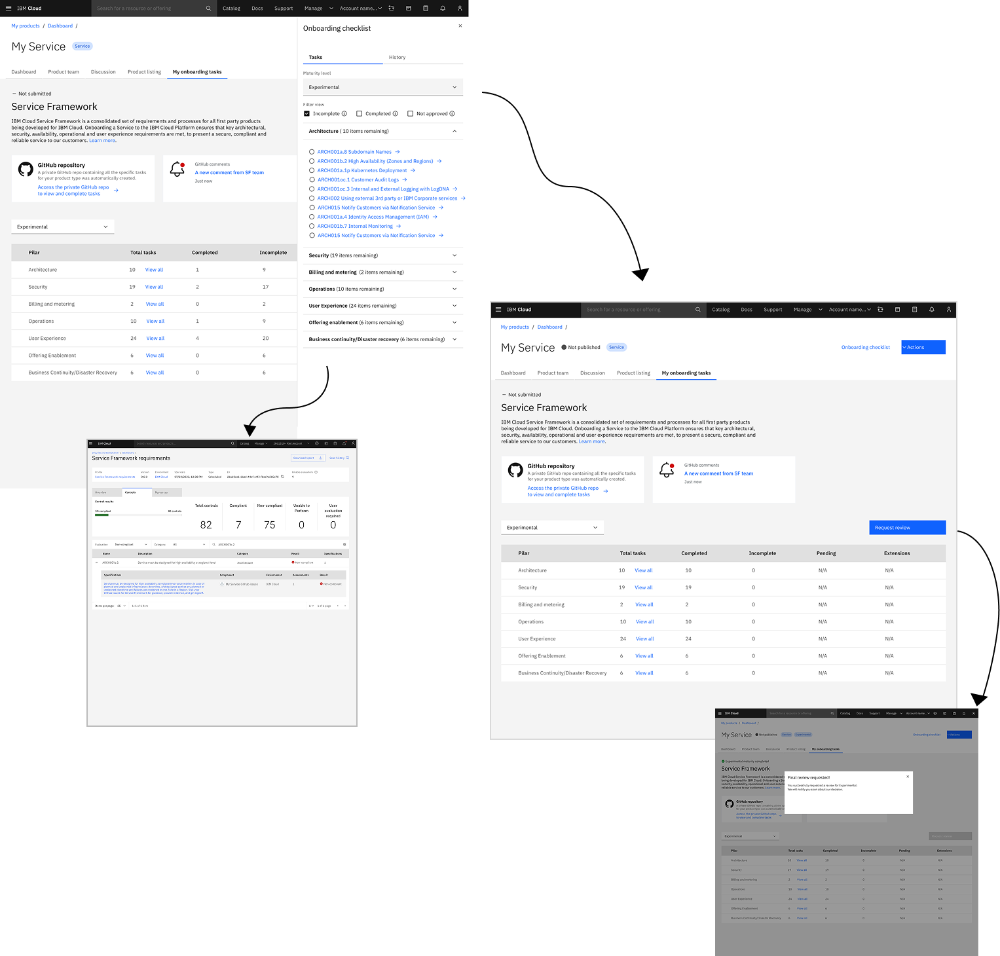
03
Usability Testing
Testing Methodology
We validated the redesigned onboarding experience through 1-hour usability sessions with 8 participants: 6 Product Owners and 2 Solution Planners (Technical Leads).
Goals:
- Validate unified platform reduces fragmentation and confusion
- Assess wizard effectiveness in determining product type and requirements
- Evaluate dashboard and checklist for progress tracking capabilities
- Identify usability issues before development investment
Method:
Moderated remote sessions using interactive prototype with task-based scenarios and think-aloud protocol
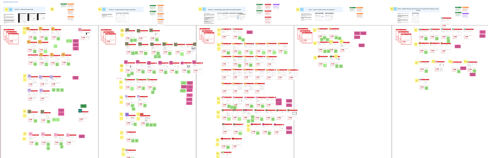
Key Testing Insights
What Worked Well:
- Intuitive Wizard flow: All participants completed setup without assistance from SMEs or Service Framework documentation
- Dashboard & Checklist tracking: The combination made it significantly easier to accurately track team's progress and locate requirements
- Extension tracking: Teams found it useful to see their extensions on the dashboard to remember pending work and stay accountable
Overwhelming Enthusiasm:
Product Owners expressed strong excitement about Partner Center's potential to:
- Accelerate releases and reduce time-to-market
- Make Service Framework process less intimidating
- Significantly reduce time spent preparing executive reports
Top-Rated Capabilities:
Automated GitHub Integration: Product Owners loved having requirement issues automatically created in a centralized private repository—eliminating hours of manual setup work
Issues Identified:
- Wizard Maturity Phase information: Product Owners liked having Experimental/Beta/GA information upfront, but they thought they still needed to select target maturity. Expected to learn about the maturity level after completing the wizard, not during
- GitHub Navigation confusion: Product Owners expected to go directly to requirement issues in GitHub from the checklist instead, they landed in SCC (Security and Compliance Center) filtered to a single control
- Current Phase Visibility: Users were unable to identify on the Dashboard which phase they were currently working on (Experimental, Beta, GA, or OneCloud)
- Dashboard Terminology Inconsistency: Product Owners used the term "workflow" instead of "Shortcuts", and some needed clarity on the difference between "extension" and "exception"
04
Design Iterations
Iteration 1: Wizard Maturity Phase Information
Before
Wizard displayed phase information upfront, confusing Product Owners about whether they needed to select target maturity.
After
Moved phase education to post-wizard, keeping setup focused only on questions requiring user input.
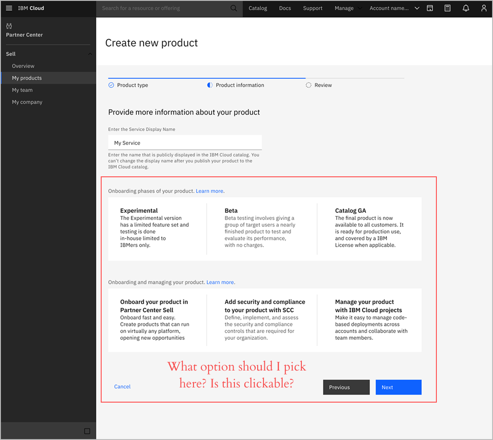
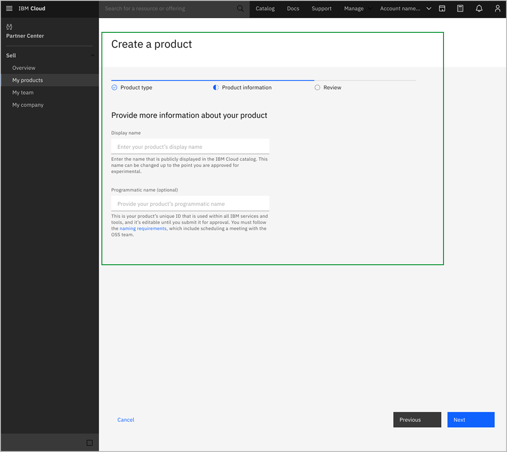
Iteration 2: GitHub Navigation
Before
Product Owners expected checklist links to open GitHub requirement issues, but instead landed in SCC filtered to a single compliance control.
"Wow, this is not a git issue!" "It is very intimidating to me."
After
Direct links from checklist to GitHub issues
"This will make Service Framework significantly less intimidating" — Product Owner
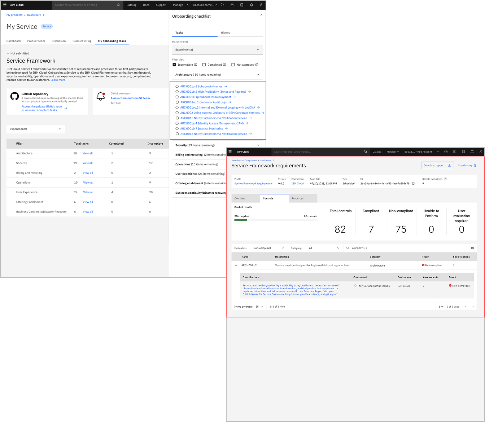
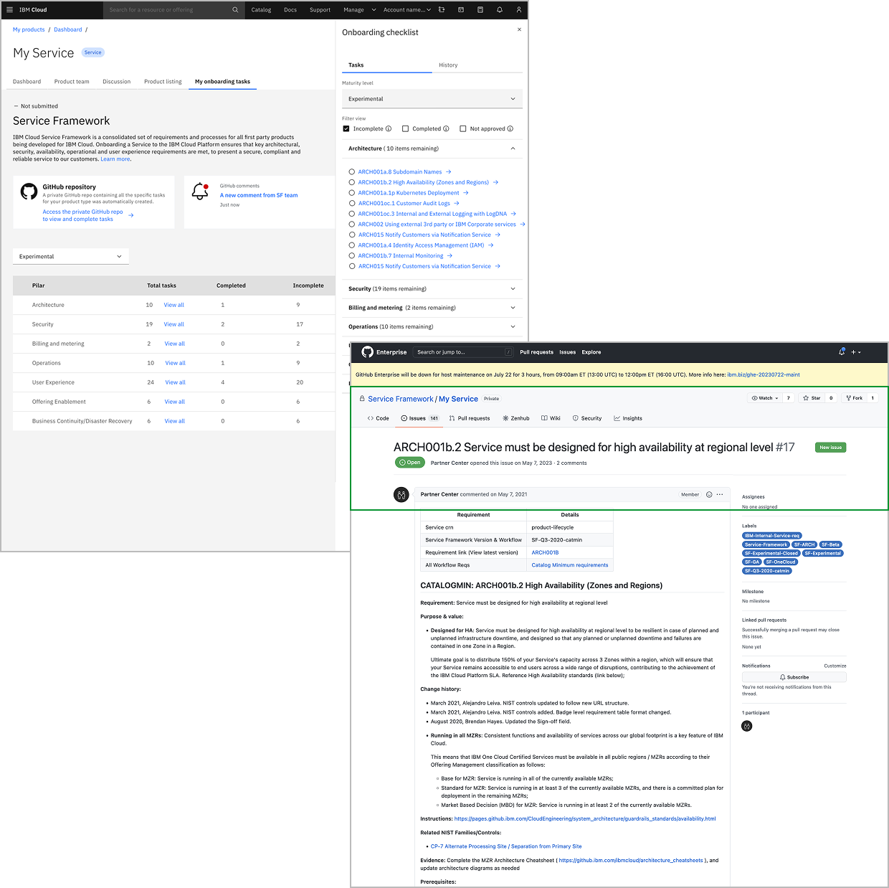
Iteration 3: Current Phase Visibility
Before
Users were unable to identify on the Dashboard which phase they were currently working on (Experimental, Beta, GA, or OneCloud).
After
Added prominent phase indicator on dashboard highlighting the current phase with visual emphasis.
"Finally a central source of truth instead of bouncing between docs, GitHub, and RMC" — Product Manager
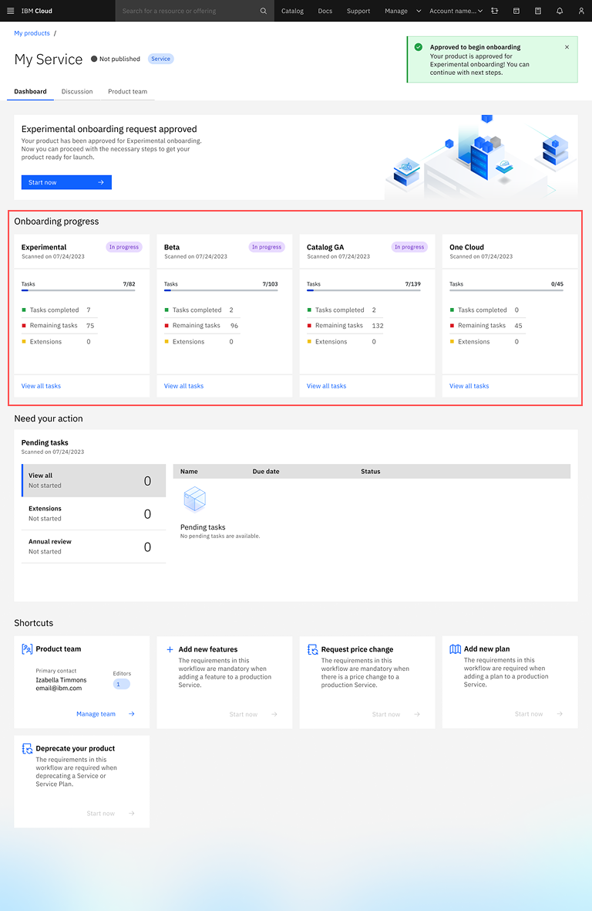
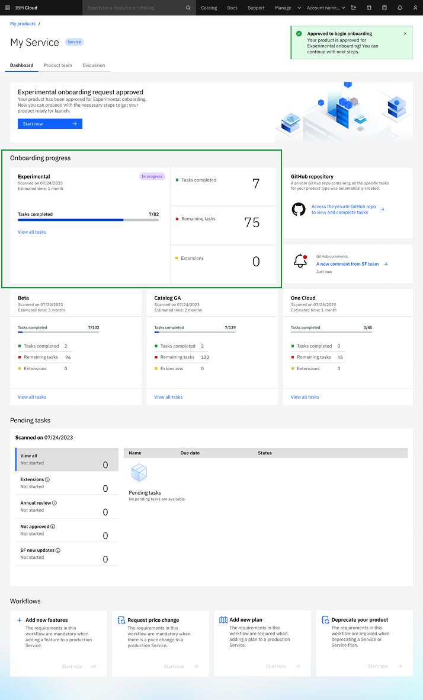
Iteration 4: Dashboard Terminology
Before
Product Owners used "workflow" instead of "Shortcuts". Terms "extension" and "exception" were also confused due to similarity.
"I am not sure what is the difference between extension and exception." "Is shortcut what we call workflows today. Why should we change it?"
After
Renamed "Shortcuts" to "Workflows" and added clarifying learn more information descriptions distinguishing extensions from exceptions.
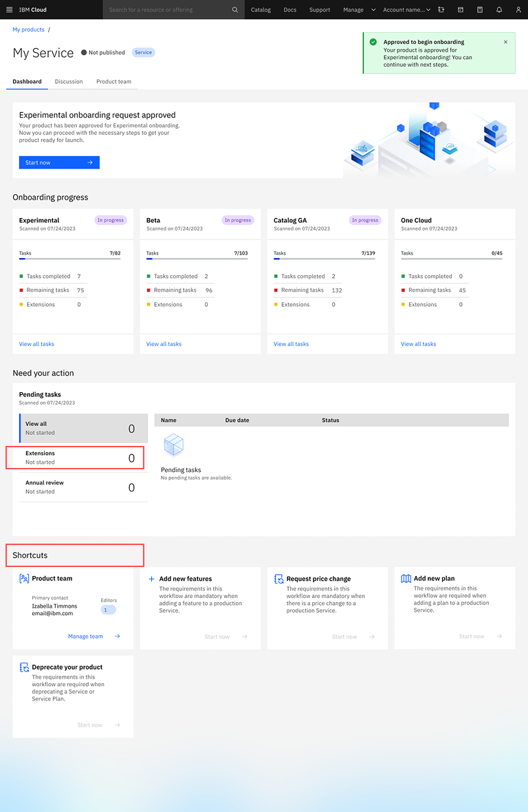
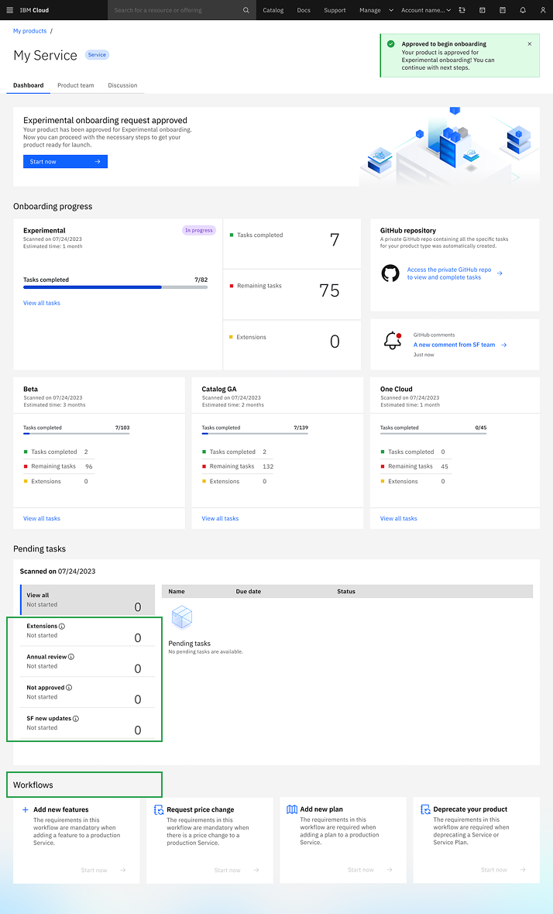
05
Key Learnings
Working Within Constraints
Redesigning an existing system required deeper strategic thinking than building new—and produced a more scalable solution by leveraging proven infrastructure.
Balance Multiple Stakeholders
Success meant serving Product Owners, reviewers, SMEs, and executives—finding intersection points rather than optimizing for one audience.
Automate to Reduce Cognitive Load
Embedding intelligence (wizard, notifications) proved more valuable than interface polish—great UX often means removing steps entirely.
Connect Design to Business Value
User satisfaction mattered, but $540K savings and 80% faster onboarding were critical for executive buy-in and proving design ROI.